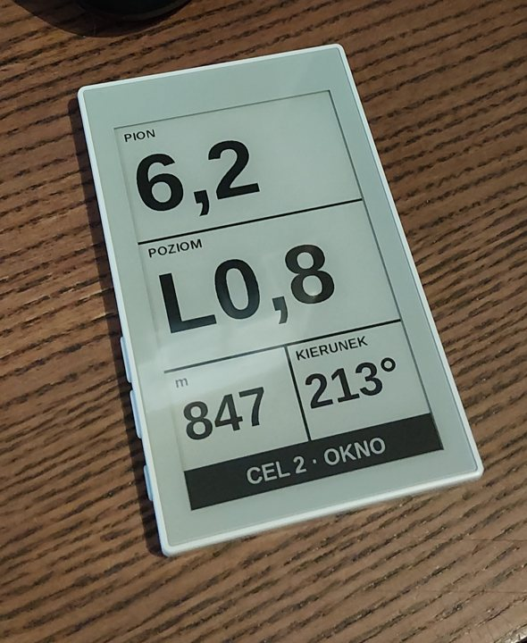

sniperSticky
E-paper device
A ballistic calculator on an e-paper screen, mounted next to the scope. It computes corrections with no phone and no network, and reads weather and wind from a Kestrel.
Why it exists
A phone on a rifle gets in the way. It has to be unlocked, the screen goes dark, and it is hard to read in full sun.
An e-paper screen is readable in full sun and draws power only when the image changes. sniperSticky shows the correction for the selected target in large digits you can read without leaving the rifle.
Hardware
The program runs on the Seeed reTerminal Sticky: an ESP32-S3 microcontroller, a 3.97-inch 800 × 480 screen, a 750 mAh battery, 70 g. I wrote the firmware from scratch in C++.
What it computes and shows
- elevation and windage in mils for one target or for four targets at once,
- a range card with targets on range arcs and a correction table every 100 m,
- rifle cant,
- a fired shot, detected by the accelerometer.
The ballistic engine is ported from SniperTAK. Results differ from the plugin by 0.05 mil at most.
When data is missing, the number is replaced by „--”. The program never fills in default values.
Working with a Kestrel
The Sticky connects to a Kestrel 5700 weather meter over Bluetooth. It reads weather, wind, rifle profiles and targets, and can also show the corrections computed by the Kestrel itself. I had reverse-engineered the Kestrel protocol earlier for the SniperTAK plugin.
Status
Version 0.6.5 works. The Sticky downloads new versions by itself over Wi-Fi, and profiles and targets stay in memory.
The next version adds corrections in minutes of angle (MOA). Links to the Vortex Impact 4000 and Leica CRF 2700-B rangefinders and target and profile exchange with the SniperTAK plugin are in progress.
The photos and the video below show the device as of early November 2026, with a Kestrel 5700 next to it.
Video
Photos
